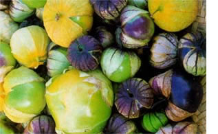

New England/Maritime Canada
The ice thaw: It's time to dig overwintered parsnips for the first garden treats of the year. Spinach, cilantro, 'Sylvetta' arugula, mustards, oriental greens, lettuce and mesclun mixes can all be planted in cold soil. If the ground is too wet to turn, just lay the seed down and cover with compost. Spun polyester row cover will speed the growth of early greens and protect against flea beetle damage. For the earliest beet greens, try setting out the last of your storage beers; they will sprout a crop of tender leaves before going to seed. Plant peas in late April. In the greenhouse or cold frame, it's time to start cucumbers, melons and squash. These plants hate having their roots disturbed, so use individual 3-inch peat pots that can be set directly into the ground. Wait to set out plants until the ground has thoroughly warmed to 60 degrees.
Mid-Atlantic
Greens are everywhere. You may want to steam and freeze some before they all bolt. Start successive plantings of peas, spinach, beets, carrots, radishes, lettuce, greens and potatoes in early April to keep the harvest rolling in. Have your cabbage in the soil under floating row cover by April 7, and add broccoli, cauliflower and some 'Glacier' tomatoes by Tax Day. Hill soil around potatoes when they're ankle high. When the calendar says May, Ill likely he inundated with weeding. Hoe on the dry days and pull on the wet days. Start early cucumbers, melons and squash in peat pots and begin sowing beans and corn in early May. Mid-May is time to begin setting out tomatoes and warm-season crops. If you can harvest peas this month, you did well.
Southern Interior
April and May are wonderful times to be a gardener in the Southern regions. In the early part of this period, there's still time to get those summer-blooming bulbs planted and on schedule for summer color. Till and fertilize annual beds to prepare them for planting. Most annual plants will not respond until the soil temperature reaches 60 degrees, providing ample time for preparation. After the last frost has passed, those heat-loving vegetables you started indoors (cucumbers, tomatoes, peppers and squash) can be moved to their new home outdoors. Many Southern gardeners say April 15 is the perfect deadline for the last frost (just to he safe). Sow annual flowers such as asters, cosmos, zinnias and marigolds as soon as the frost has passed and the air begins to warm up.
Gulf Coast
Our intense summers really take a toll on some vegetable crops, so time your plantings accordingly. Finish seeding bush snap beans, lima beans, sweet coin, winter and summer squash by early May to avoid heat damage. Vegetables that thrive in the heat can be planted throughout April and May; these include sweet potato transplants, okra, southern peas, pumpkins, peanuts, watermelons, cucumbers, cantaloupes, collards, squash and eggplants. Prolong the harvest of cool-season crops, like lettuce and spinach, by shading them with a thin, floating row cover. If your tomatoes have suffered from blossom-end rot or cracking in the past, uneven watering is probably the culprit. Bury a gallon pot or perforated milk jug next to the plant and fill it with water daily to keep the roots evenly moist. Prune flowering shrubs after they have bloomed.Finish pruning citrus trees in April. Don't overwater them-some fruit dropping is normal through mid June.
Central/Midwest
As the ground becomes workable in April, plant peas, carrots, beets, turnips, radishes and potatoes. Wait on more tender varieties (lettuce, cabbage, other greens) until several weeks before the average last frost, or plant under row covers. Sow successive cr ops every two weeks through April and May to maximize harvest and quality. Divide perennial flowers. Fertilize potted plants to maintain vigorous growth. Seedling transplants need a hardening off period to slowly expose them to the sun, wind and cool temperatures. Start with a few hours a day and gradually increase. Check with experienced gardeners for ad vice an using season extenders to get a head start on tomatoes and peppers. Keep an eye on the weather. As with all seasons in the Midwest, conditions can vary significantly from year to year.
North Central and Rockies
Patience is a virtue demonstrated by the oldtimers in our mountain valley, who are less likely to hurry to plant even dur ing unusual warm spells. Year in, year out, looking back from a green, bountiful July garden, they have noticed it doesn't make much difference jumping the gun in April or May. For now, stick to cold season vegetables: arugula, asparagus, fava beans, beets, broccoli, brussels sprouts, cabbage, carrots, cauliflower, Chinese celery, chicory, corn salad, kale, leeks, lettuce, oriental mustard, onions, bok choi, parsnips, peas, radishes. spinach, Swiss chard and turnips. These can survive the all-too-common late May snowstorm or monthlong cold, rainy period. The first of May is early enough to start tomatoes for outside planting around June 1. Four-week transplants will be small and folks may laugh, but in the end, more years than not, you'll harvest the first tomatoes.
Pacffic Northwest
Just when you thought the sun had left the Northwest for good, out it comes, bringing with it not only warmth but also a bundle of pleasurable garden chores. Sow seeds of radishes, beets, lettuce, mustards, greens and carrots. Broccoli, cabbage, cauliflower and brussels sprouts seedlings can be set out up to six weeks before the last frost, as long as they have at least three or four sets of true leaves. A good rule of thumb for tomatoes, peppers, eggplants and basil is to transplant when nightly temperatures are 50 degrees or above. (Most Pacific Northwest gardeners wait until after May 15.) Once soil temperatures reach 60 degrees, you can plant corn, beans. squash and cucumbers. For late springy plantings of peas, use an enation virus-resistant variety that will remain productive when weather warms. Some resistant va rieties are `Oregon Sugar Pod,' 'Cascadia' or `Sugar Sprint' snap peas, and `Oregon Trail' or `Pioneer' shelling peas.
Southwest
When nights are consistently above 50 degrees, it's time to plant eggplant, pepper and tomato seedlings. Sow seeds of beans, chard, collards, corn, cucumbers, gherkins, kale, leeks, melons, muskmelons, mustards, okra, onions, parsley, pumpkins, squash, watermelon, sweet basil and other herbs. Water plants deeply once a week as weather heats up, and surround them with liberal amounts of mulch to shade the soil and add organic matter. Wheat straw mulch is especially effective as it contains natural plant herbicides, which keep spring weeding to a minimum. Add variety to your garden and menu by trying some new vegetables from Central America, South America and Asia. The following can all be direct seeded this time of year: amaranth, edamame (soybeans eaten like fresh peas-w e'll have a report on American variety trials in the next issue), Malabar spinach, Couve tronchuda (Portuguese cabbage), Huauzontli (red Mexican spinach), jicama (water chestnut-flavored root), and tomatillos (for salsa). (These uncommon crops are available from Redwood City Seed Co., www.ecoseeds. com ; (650) 325-7333.)
Children love having their own little spots to garden. Easy-to-grow favorites are pumpkins, carrots, peas, sweet corn, sunflowers, cosmos and morning glories. Encourage your child to make a few selections, and help the child be successful. If you take their picture as they are planting, the children will have a visual record of how their plants have grown. Gardening is a cultural legacy to pass on to each generation
-Rose Marie Nichols McGee
Our thanks to the following for their contributions to the Almanac: Roberta Bailey, FEDCO Seeds, Waterville, Maine; Cricket Rakita, Southern Exposure Seed Exchange, Mineral, Virginia; Connie Dam-Byl, William Dam Seeds, Dundas, Ontario; Matt Barthel, Seed Savers Exchange, Decorah, Iowa; Bill McDorman, Seeds Trust/High Altitude Gardens, Hailey, Idaho; Josh Kirschenbaum, Territorial Seed Company, Cottage Grove, Oregon; Rose Marie Nichols McGee, Nichols Garden Nursery, Albany, Oregon; Craig and Sue Dremann, Redwood City Seed Co., Redwood City, California; Dean Lollis, Park Seed Co., Greenwood, South Carolina
|
ILLUSTRATION BY DIANE A. RADER Tomatillo `Purple de Milpa' |
 PHOTO BY DAVID CAVAGNARO (2) Grain amaranth bloomed. |
|